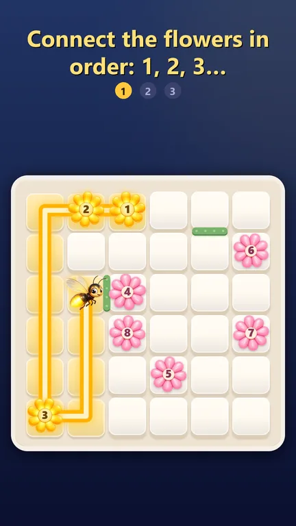
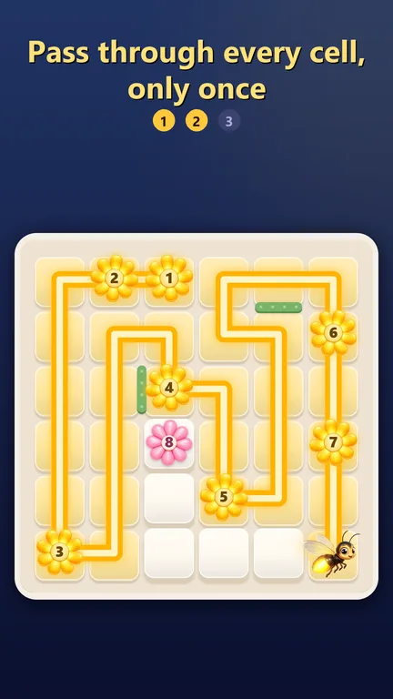
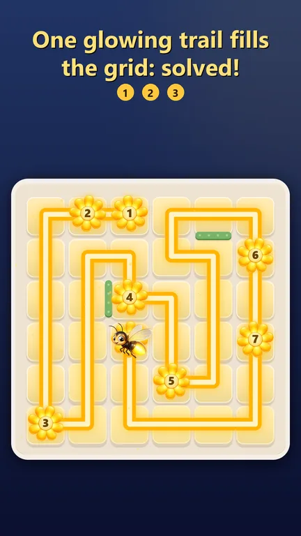
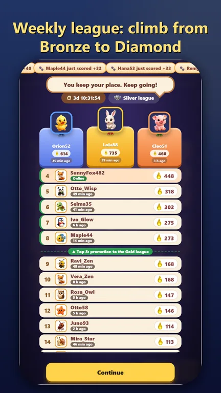

Firefly Trail
Guide a little firefly on one single glowing trail. Start on flower 1, pass through every cell exactly once and reach the flowers in number order. It sounds simple. It is not.




Features
- Every puzzle has exactly one solution, and you can always find it by logic: no guessing, no 50/50
- Hints that teach: they start from your line and explain why the next move is forced
- A new grid every day, with a streak and a full archive of past days
- Weekly league of 50 players: every grid you solve collects glow, faster and cleaner solves earn more, climb from Bronze to Diamond
- Your profile: a name and 63 collectible 3D figurines, unlocked league after league
- Hundreds of grids from 5×5 to 9×9 in three difficulties, unlimited play and a timed mode
- No lives, no energy, no subscription
- Dark mode, colorblind-friendly colors, plays offline
- English, French, German, Spanish, Italian, Portuguese and Dutch